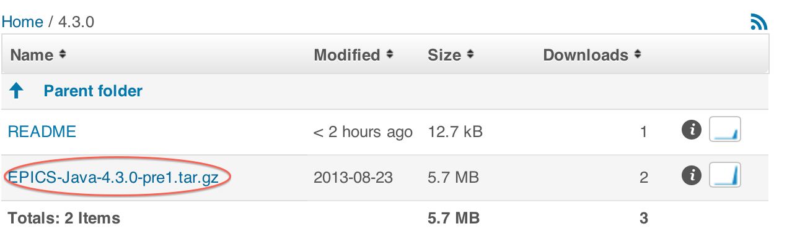

This document describes how to start to develop software using the EPICS V4 toolkit. It's a step by step guide to downloading the appropriate EPICS V4 products and associated software, and to using them to create programs. Presently, the document concentrates on interfacing to EPICS Base IOC control data, through the C++ bindings of new EPICS V4 modules pvAccess and pvData, and on developing middleware EPICS data services using the RPC capability of pvAccess in Java and C++. Programming illustrations are included.
This is the 18-Oct-2013 version of the Getting Started with EPICS V4. This version is up to date with respect to EPICS V4.3. Specifically, it contains instructions for building and running pvaSrv, the revised method of EPICS V4 access to PVs on Base IOCs accessed over pvAccess.
The next version should include: section after step-by-step like "going further" which points to existing documentation of the EPICS V4 core modules.
None so far.
EPICS V4 is implemented in C++ and Java. Its APIs are in C++ and Java mainly, though wrappers are being produced for Python and Matlab. However, this document covers only development in Java and C++.
See also the Troubleshooting EPICS V4 cheatsheet, which lists very first steps in finding and resolving problems with EPICS V4 connections.
Release "EPICS V4.3 beta" is comprised of 2 "core" modules: pvData, and pvAccess, which will always be needed for V4 functionality, plus a number of others which are only pertinent depending on whether you're working in C++ or Java, or at the IOC level or higher.
The specifications for the function of these are (or are presently being) defined as normative documents of the EPICS V4 working group, and available from the homepage the EPICS V4 homepage. There are Java and C++ implementations of each of the core modules. The source code of each can be acquired from Mercurial. To use them, you can download and build them from the source, as described below. For Java, you may alternatively just download the Jars. This document deals with acquiring and using the core modules, plus pvaSrv to connect to EPICS Base IOCs. However, there are many more pieces of software in the EPICS V4 "ecosphere", please see the homepage, and the EPICS V4 Mercurial web site.
A table in the EPICS V4 download site README details the modules of EPICS V4.3. Part of it is reproduced here:
C++ Module Summary:
pvAccessCPP The EPICS V4 "wire protocol". Supports pvData.
pvDataCPP The EPICS V4 support for high performance data interchange.
pvCommonCPP Utility libraries.
pvIOCCPP Deprecated. Only included in distribution for one part needed by pvaSrv.
exampleCPP Code examples, including use of pvData containers, RPC, demo servers.
pvaSrv An EPICS Base IOC plugin for interfacing CA data to pvAccess.
Java Module Summary:
pvAccessJava The EPICS V4 "wire protocol". Supports pvData.
pvDataJava The EPICS V4 support for high performance data interchange.
easyPVA A somewhat easier to use Java API to the facilities of pvAccess.
exampleJava Code examples, including use of pvData containers, RPC, demo servers.
directoryService EPICS V4 interface to classic EPICS directoryService.
caj An all Java implementation of the Channel Access protocol.
jca A Java API and wrapper interface to the C++ implementation of
the Channel Access protocol.
The specific versions of these modules that comprise the EPICS V4.3 suite, are formally listed in RELEASE_VERSIONS.
The dependency hierarchy between the above is the following: pvData is independent; pvAccess depends only on pvData; pvIOC and pvaSrv depend on both of the above, as do the other associated utility modules. Builds in which only one of these is built, must of course take this interdependency into account.
To link the new EPICS V4 modules to EPICS Base IOC records, two basic approaches are possible.
In the first, an an embedded pvAccess server inside a Base IOC (say running EPICS V3.14) accesses records directly through the database, allowing a V4 client to communicate with the "V3" records through pvAccess. This is provided by pvaSrv and implemented in C++.
Alternatively EPICS V4 can link to the Base IOC records using Channel Access. As of V4.3, this may be done in both Java and C++ implementations of pvAccess, though for Java, jca*.jar and caj*.jar, are prerequisites. There are a number of modes of such interoperation. Firstly, an embedded Channel Access client inside the pvAccess server allows a pvIOC to communicate with an EPICS Base IOC, i.e. a pvIOC database can access records in a Base IOC database. Secondly, the pvAccess client can be configured to use the Channel Access protocol of Base (3.14) when accessing Base IOC channels. Thirdly, the pvAccess server (part of pvAccess above) allows an existing EPICS Base Channel Access client to access a pvIOC database. These interoperability functions require JCA and CAJ jcaandcaj. These are available from the EPICS V4 download site http://sourceforge.net/projects/epics-pvdata/files/ or from their reference sources.
When we say "EPICS Base", or loosely "V3", in general we mean EPICS Base version 3.14.
Since the development cycle (compile, build, etc) is significantly different for each language, and to match suitable language API description to suitable use cases, this guide is split into 2 major parts. Firstly, Java development and secondly C++ development.
This section is on software development, with and of, the Java implementation of EPICS V4. For C++ development, see below.
The Java implementation of the core EPICS V4 pv* modules, is made available in two ways. Firstly, you can download EPICS V4 as a tarball of the jar files directly from the EPICS V4 SourceForge site. Alternatively, you can download the Java sources and build it yourself.
You would use the tar file mechanism of acquiring EPICS V4 if you only intend to use EPICS V4's Java implementation as a user. If you want to contribute to development at all, or to examine the source for other reasons, you probably want to acquire EPICS V4 by the method of downloading the Mercurial source, and building with Maven. Each of these will be described below.
Since the minimum EPICS V4 runtime is composed of the 2 modules pvData and pvAccess, you will need at least those two. The sections below will guide you through acquiring them from Jars or building from the source.
If you intend to use EPICS V4's Java client side to talk Channel Access to EPICS base IOCs, then you will additionally need caj and jca. Those two are bundled in the Java tar file.
The simplest way to acquire EPICS V4's Java implementation is to download the tar file of the jars, from the EPICS V4 SourceForge download site, http://sourceforge.net/projects/epics-pvdata/files/ [downloadsite]. See in particular the README file at the site..
The table above lists the modules that comprise the Java implementation of the EPICS V4 suite. The 2 modules named pvAccess*.jar and pvData*.jar make up the core of EPICS V4 The tar file contains these and others. You'll need at least what's in the tar.gz.
To get off the ground using Java download, see the examples in the epics-pvdata exampleJava Mercurial repo [ev4examples-java]. The setup files of those examples (helloWorld_setup.bash and rdb_setup.bash) are written assuming local .class files, you'll have to convert them so the CLASSPATH points to the jar files instead - as described below ). So far only examples of the "ChannelRPC" functionality of EPICS V4 are included in the exampleJava repo, but more will be added.
This section is a guide for acquiring and configuring the files in the Java tar.gz. For illustration we test successful execution of the helloWorld client/server example.
% tar xvfz EPICS-Java-4.3.0.tar.gz [if you got it compressed] % tar xvf EPICS-Java-4.3.0.tar [if you got it uncompressed]You should see about 30 jar files, of executable, source and javadoc. The 1st 10 or so are listed below for illustration:
% cd EPICS-Java-4.3.0 % ls -l total 12272 0 drwxr-xr-x 32 greg staff 1088 Aug 22 19:17 ./ 0 drwx-wx---@ 108 greg staff 3672 Aug 26 18:35 ../ 24 -rw-r--r-- 1 greg staff 11539 Aug 22 19:17 README 8 -rw-r--r-- 1 greg staff 1438 Aug 22 19:17 RELEASE_VERSIONS 1600 -rw-r--r-- 1 greg staff 815711 Jun 14 2012 caj-1.1.10-javadoc.jar 456 -rw-r--r-- 1 greg staff 230655 Jun 14 2012 caj-1.1.10-sources.jar 480 -rw-r--r-- 1 greg staff 244094 Jun 14 2012 caj-1.1.10.jar 16 -rw-r--r-- 1 greg staff 6272 Jun 14 2012 caj-1.1.10.pom 88 -rw-r--r-- 1 greg staff 44334 Aug 21 03:35 directoryService-0.2.1-javadoc.jar 24 -rw-r--r-- 1 greg staff 9620 Aug 21 03:35 directoryService-0.2.1-sources.jar ...
% mkdir exampleJava % cd exampleJava % jar xf ../exampleJava-2.1.0-sources.jar % ls -l total 8 0 drwxr-xr-x 6 greg staff 204 Aug 26 18:43 ./ 0 drwxr-xr-x 37 greg staff 1258 Aug 26 18:43 ../ 0 drwxr-xr-x 3 greg staff 102 Aug 21 03:49 META-INF/ 0 drwxr-xr-x 3 greg staff 102 Aug 21 03:42 illustrations/ 8 -rw-r--r-- 1 greg staff 1211 Aug 21 03:42 overview.html 0 drwxr-xr-x 4 greg staff 136 Aug 21 03:42 services/
Note that exactly how the setup must be, will depend on whether you intend to execute the example code from its jar, as download in the distribution tar, or to extract the source of the example so you can look at it and build it, or whether thirdly you may have cloned the repos. This example will assume you want to extract the source of the exampleJava, and compile that, but execute it using support in the jar files of EPICS V4.
WORKSPACE=$HOME/Temporary/EPICS-Java-4.3.0
CLASSPATH=${EXAMPLES}
CLASSPATH=${CLASSPATH}:${WORKSPACE}/pvDataJava-3.0.0.jar
CLASSPATH=${CLASSPATH}:${WORKSPACE}/pvAccessJava-3.0.0.jar
cd to exampleJava/services/helloWorld, then $ source helloWorld_setup.bash $ javac *.java
$ chmod +x helloServerRunner helloClientRunner % ./helloServerRunnerTip: If you get a ClassNotFound, you can diagnose your runtime environment's CLASSPATH by sourcing helloWorld_setup.bash, and then running a command like
printenv CLASSPATH | tr : '\n' | xargs -I{} ls {}
% ./helloClientRunner Stefania Hello Stefania
The use case of downloading the source using Mercurial (aka "hg"), and building with Maven, would be applicable if you are a Java developer and wish either to contribute to EPICS V4, or like to use a command line for your Java builds, or both.
All 3 of the normative EPICS V4 projects (pvData, pvIOC, pvAccess) are each in distinct mercurial repositories in the SourceForge project epics-pvdata. There are separate Mercurial repos for each of the C++ and Java implementations of each normative project [EPICSV4repos]. They can all be checked out via the Mercurial unix shell command hg, or using a Mercurial GUI client suitable for your platform.
The procedure defined below will help you download the source for the pv core modules above, plus the caj/jca jars, and build pv core jars.
You must have Maven and Mercurial clients installed. Mercurial, commonly "hg" on the command line comes for free with Mac OS (or MacHg for Mac OS X is a nice GUI). Mercurial must be able to download from the "epics-pvdata" sourceForge project. That means you either are going to use the HTTP URI syntax or the SSH URI syntax, as understood by Mercurial.
Download from the Mercurial repositories can be done anonymously (using the HTTP method), or using a sourceForge account (which uses the SSH method). The HTTP method may not work from your institution (see below) and if you're going to use the SSH mechanism, you will have to register with sourceForge.
Anonymous checkout (which uses the HTTP method - if it works for you) is via the URI below. Note that we have seen that some people get a "cannot connect" timeout using this method, while the identical command works for other people. It's probably related to the common practice of blocking port 8000 on the client side, which is done by many institutions for security reasons. Below is an example of how to check out the pvDataJava Mercurial repository, using the hg unix command via anonymous access:
% git clone https://github.com/epics-base/pvDataJava.git
Alternatively use the ssh URI below for "non-anonymous" access. Permissions are presently set such that only epics-pvdata members can check out or push commits, so contact any one of the participants to get added first:
% git clone https://github.com/epics-base/pvDataJava.git
See the Cheatsheet for Passwordless SSH Access to SourceForge for EPICS V4 Development if you'd like to set up your SourceForge account so that SSH operations can proceed without a password. Of course, for command line development as is described here, passwordless ssh authentication to SourceForge Mercurial is not necessary, it's just nice. But for Eclipse development it is important because of problems in Eclipse's Mercurial tools when they come to needing a password from the user.
Having installed mercurial (hg command) and decided on the URI scheme you're going to use (HTTP or SSH), now download the source. You'll create a local Mercurial "repository" for each EPICS V4 module you get.
First, you may want to create a root directory in which to house your repo directories, Eg:
% pwd /Users/greg/Development/epicsV4/ % mkdir hg % cd hg
To download the source using Mercurial, use an "hg clone" command, executed while in the directory you created, i.e. "hg/" in the example above. You will need at least the 2 core "normative" module Java implementations pvDataJava and pvAccessJava (the first 2 below). You may well also want exampleJava, which contains example servers and clients, and easyPVAJava, which contains an beta level development of a simple client side API for pvAccess. See RELEASE_VERSIONS relver for the other modules bundled with the release, that you may also want to clone.
[from hg/ directory in this example, created above] % git clone https://github.com/epics-base/pvDataJava.git % git clone https://github.com/epics-base/pvAccessJava.git % git clone https://github.com/epics-base/exampleJava.git % git clone https://github.com/epics-base/easyPVAJava.git
After each of these, you should see 9 or 10 lines, ending in a line like the following:
"842 files updated, 0 files merged, 0 files removed, 0 files unresolved"
The build dependencies of the EPICS v4 core modules are:
When building (instructions below) you will see warnings, but should not see any errors if the build is successful. Warnings come from both source compiles and many from javadoc compiles. At the end of each "mvn compile install" process, you should see:
[INFO] ------------------------------------------------------------------------ [INFO] BUILD SUCCESS [INFO] ------------------------------------------------------------------------
The build itself is handled by Maven for Java builds. The actions for the build of each EPICS V4 module is handled by its own pom.xml file, there is no global one. So, the build process involves "cd" ing to the cloned repository (as they're called in mercurial speak) of each one of the 3 core modules, and issuing "mvn compile install" in each one. Start with pvDataJava since it has no dependencies, then pvAccessJava, then pvIOCJava.
If this is really the first Maven build you've done, the first mvn compile line below will result in 2 things; Firstly, it will create your local "m2 repo" (in ~/.m2 by default). Then it will initiate many downloads from sourceForge, plus from Maven and prerequisites of Maven. But if you chose this path to EPICS v4, you probably knew that!
% pwd /Users/greg/Development/epicsV4/hg [in this example] % cd pvDataJava/ % mvn compile install % cd ../pvAccessJava/ % mvn compile install -Dmaven.test.skip=true
Note that as written here, the mvn compile install commands skip the post compilation tests. These tests would include exception handling tests, the output of which look like errors, because the tests are specifically to test for correctly dealing with runtime errors. If you you would like to include the tests, remove the Maven option -Dmaven.test.skip=true.
The above 2 complete the build of the EPICS v4 core. You may also want to try the examples which are in the exampleJava module, and a somewhat simplified pvAccess API named easyPVA. exampleJava uses easyPVAJava, so get them both and build it with the following:
% cd ../easyPVAJava/ % mvn compile install -Dmaven.test.skip=true % cd ../examplesJava % mvn compile install
The outcome of these builds is that you should see all of the build products in your local Maven repository (~/.m2/repository/ by default).
The minimum EPICS V4 runtime is composed of only 2 Jars, for the core, plus
2 if you want to access EPICS V3 IOCs, so you can
check the outcome of the builds with the find command below, to verify that from the 100s now
in ~/.m2/, you have the few you really need. Again, actual
version tags, i.e. "2.1-SNAPSHOT" in the example below, will vary as EPICS V4 matures:
% cd ~ % find . -name "pv*SNAPSHOT.jar" -o -name "*caj*.jar" -o -name "*jca*.jar" .m2/repository/epics/pvData/2.1-SNAPSHOT/pvData-2.1-SNAPSHOT.jar .m2/repository/epics/jca/2.3.6/jca-2.3.6.jar .m2/repository/epics/caj/1.1.10/caj-1.1.10.jar .m2/repository/epics/pvAccess/2.1-SNAPSHOT/pvAccess-2.1-SNAPSHOT.jar .m2/repository/epics/pvIOC/2.1-SNAPSHOT/pvIOC-2.1-SNAPSHOT.jar
Note that the results gave you not only jar files under ~/.m2/, but the sources and
javadoc jars too (in the Maven standard naming).
The above completes the build of EPICS V4 locally. To use it, you would write code that compiles and executes against the jar files above.
To use or develop these, the steps might be:
For Java client and server examples, at the time of writing, see the source code in the examplesJava module. You can find this on the epics-pvdata web site [ev4examples-java]. At the time of writing, examplesJava contains 2 examples, both of RPC style servers (that is, pass arguments to EPICS V4 server, get data back dependent on the arguments).
channelRPC functionality of EPICS V4This section is on software development, with and of, the C++ implementation of EPICS V4. For Java development, see above.
This section guides you through the process of acquiring the source, building the core modules, building the example services and running an EPICS V3 IOC with a pvAccess server included (that is, you can use EPICS V4 client tools to access the PVs through the pvAccess network protocol).
The simplest way to obtain the EPICS V4 C++ source is to download it as a tar from the SorceForge website site http://sourceforge.net/projects/epics-pvdata/files/. This is a good option if you wish to deploy EPICS V4 services or add a pvAccess server to a V3 IOC and want a stable release.
If you want the latest code or wish to contribute to development you will need to clone the SourceForge Mercurial repositories. This will of course give you the full revision history of the modules including previous releases. The modules can be obtained using the Mercurial clone command.
For this you will need the Mercurial client tools, as described above. Choose the location for your EPICS V4 modules and obtain the required modules with a Mercurial clone using either the SSH or HTTP URI. You're not required to put all the modules in the same directory, but it makes sense and can simplify the build process. The minimum you'll need is the modules pvCommonCPP, pvDataCPP and pvAccessCPP. So if you're using the SSH URI, clone as follows:
[commands issued from the desired location for each repo] % git clone https://github.com/epics-base/pvCommonCPP.git % git clone https://github.com/epics-base/pvDataCPP.git % git clone https://github.com/epics-base/pvAccessCPP.gitand if using HTTP:
% git clone https://github.com/epics-base/pvCommonCPP.git % git clone https://github.com/epics-base/pvDataCPP.git % git clone https://github.com/epics-base/pvAccessCPP.git
To add a pvAccess server to a V3 IOC you'll also need pvaSrv as well as pvIOCCPP. pvIOCCPP was a core module, but is no longer being developed. However pvaSrv still has a dependency on this. There are also two example V4 services in exampleCPP. These can be obtained in the same way. So for SSH access clone as follows:
% git clone https://github.com/epics-base/pvIOCCPP.git % git clone https://github.com/epics-base/pvaSrv.git % git clone https://github.com/epics-base/exampleCPP.git
The C++ implementations of the EPICS V4 modules use the EPICS V3 build system, based on unix make
(in contrast to the Java implementation, which uses Maven).
A basic understanding of the EPICS V3 make system is helpful, although the following instructions do not assume this knowledge.
The build command itself is simple - it's just make.
However you will have to do some configuration - specifying where the modules' dependencies are and possibly also which targets are built.
First obtain the source as described in the previous section. If you've downloaded a tar, once you've put your tar in the desired location you can untar it in the usual way:
% tar xzvf EPICS-CPP-4.3.0.tar.gz
You will also need an installed version of EPICS V3. You should use 3.14.12 or later. Using an earlier version may not work, depending on the version and the intended application. See Appendix A for an example of building a local EPICS base, 3.14.12.2. For specific help for building on a Mac, see also Appendix B: Help with Mac OS X build.
For each EPICS V4 module you wish to build you must specify the locations of all the other modules that it depends on (the build instructions below will explain how to do this in each case).
The locations of the dependencies are picked up in the build process through the file configure/RELEASE in each module, which in turn includes configure/RELEASE.local and ../RELEASE.local (relative to the top-level of the module, i.e. in the module's parent directory).
So you can create a configure/RELEASE.local for each module specifying the module's dependencies or you can create a single RELEASE.local in the parent directory of a group of modules containing all the dependencies for those modules.
The instructions below for building the core modules, pvaSrv and their dependencies assume that all the modules are in the same parent directory and you specify the dependency locations by creating a single RELEASE.local file in the parent directory which contains the locations of all the dependencies for all the modules in that directory.
The other part of configuration is specifying the build targets.
This guide also assumes you're just building for your host architecture (i.e. that you're not cross-compiling).
Depending on your EPICS installation may well not need to do anything to ensure this.
However if your local EPICS installation has been set up by default to cross-compile for additional target architectures you will need to edit the configure/CONFIG_SITE file in each module to include a line that defines
CROSS_COMPILER_TARGET_ARCHS to be an empty string:
CROSS_COMPILER_TARGET_ARCHS=or equivalently add this in a file
configure/CONFIG_SITE.local for each module. Alternatively you can add this in a file CONFIG.local in the parent directory. Again this has the advantage that you need only do this once for all the modules in that directory. The instructions below use this last method.
If a module fails to build check the output to see what the target architecture is (look at the value of T_A in the make commands) and if necessary set CROSS_COMPILER_TARGET_ARCHS.
As a minimum you'll need to build the two core modules pvData and pvAccess as well as the module pvCommon on which these depend. The build dependencies of the EPICS v4 core modules are:
It is assumed that your EPICS V4 modules are all in a single parent directory. This will be the case if you have downloaded a release of the source from the SourceForge website and unpacked it.
To build the core modulesSpecify the dependencies for all the modules: In the parent directory (i.e. the directory containing pvCommonCPP, pvDataCPP and pvAccessCPP) create a
RELEASE.local file which sets EPICS_BASE to point to your EPICS release and PVCOMMON and PVDATA to point to the locations of pvCommon and pvData respectively. So if your EPICS V4 source is in /epics/v4/4.3 and your EPICS base in /epics/R3.14.12.2/base your RELEASE.local will be
PVDATA=/epics/v4/4.3/pvDataCPP PVCOMMON=/epics/v4/4.3/pvCommonCPP EPICS_BASE=/epics/R3.14.12.2/baseIf you intend to build pvaSrv then you should also include the locations of pvAccess and pvIOC:
PVIOC=/epics/v4/4.3/pvIOCCPP PVACCESS=/epics/v4/4.3/pvAccessCPP PVDATA=/epics/v4/4.3/pvDataCPP PVCOMMON=/epics/v4/4.3/pvCommonCPP EPICS_BASE=/epics/R3.14.12.2/base
In addition, if you need to prevent cross-compiling set CROSS_COMPILER_TARGET_ARCHS to be the empty string by creating a CONFIG.local in the parent directory which contains the line
CROSS_COMPILER_TARGET_ARCHS=
Build pvCommon: pvCommonCPP and build the module:
[from the top level directory of pvCommonCPP, issue make] % make
pvCommon should then build without errors.
Build pvData: pvDataCPP and build the module:
[from the top level directory of pvDataCPP, issue make] % make
pvData should then build without errors.
Build pvAccess: Again, pvAccessCPP and build the module:
[from the top level directory of pvAccessCPP, issue make] % make
pvAccess should build without errors, although there may be some warnings.
This completes the build of the EPICS V4 core modules (and their dependent modules).
The module exampleCPP contains examples of C++ clients and servers. You can find this on the epics-pvdata web site [ev4examples-cpp]. As of release 4.3 it is also included in the downloaded sourcefile tar.
These services require that you have built the core modules as described above. In addition the Channel Archiver Service has a dependency on the EPICS V3 Channel Archiver. Instructions for building and running the services are in their respective READMEs. These services can be used a model for starting to write your own services.
Currently examplesCPP contains 2 examples of RPC-style servers.
channelRPC functionality of EPICS V4 This section describes an example of the use of pvaSrv, the C++ implementation of EPICS V4 to access EPICS V3 PVs. That is, a version 3 IOC makes the values of its V3 channels available through pvAccess to EPICS V4 pvAccess clients.
The build dependencies are:
The module interdependencies require that they are built in the following order: first the core modules and dependencies, then pvIOCCPP, and finally pvaSrv, as detailed below.
It is assumed that pvIOCCPP and pvaSrv, as well as pvCommonCPP, pvDataCPP and pvAccessCPP are in a common parent directory.
To deploy an IOC with pvAccess support:
/epics/v4/4.3 and your EPICS base in /epics/R3.14.12.2/base your RELEASE.local will be
PVIOC=/epics/v4/4.3/pvIOCCPP PVACCESS=/epics/v4/4.3/pvAccessCPP PVDATA=/epics/v4/4.3/pvDataCPP PVCOMMON=/epics/v4/4.3/pvCommonCPP EPICS_BASE=/epics/R3.14.12.2/base
In addition, if you need to prevent cross-compiling and you have not already done so set CROSS_COMPILER_TARGET_ARCHS to be the empty string by creating a CONFIG.local in the parent directory which contains the line
CROSS_COMPILER_TARGET_ARCHS=
pvIOCCPP and build the module:
[from the top level directory of pvIOCCPP, issue make] % make
It should build without errors.
pvaSrv and build the module:
[from the top level directory of pvaSrv, issue make] % make
It should build without errors.
pvaSrv/testApp/dbPv.
From pvaSrv cd to testApp/iocBoot/testDbPv.
From here you can start the test IOC (on the host, as a "soft" IOC):
% ../../bin/<arch>/testDbPv st.cmd("arch" refers to the architecture for which you have built, e.g. linux-x86)
pvaSrv/testApp/db. You can add db files, templates etc. there.
Edit the st.cmd to make it load your EPICS databases.
sample output from running the IOC.
[testDbPv]$ ../../bin/linux-x86/testDbPv st.cmd
< envPaths
epicsEnvSet("ARCH","linux-x86")
epicsEnvSet("IOC","testDbPv")
epicsEnvSet("TOP","/epics/v4/4.3/pvaSrv/testApp")
epicsEnvSet("PVASRV","/epics/v4/4.3/pvaSrv/testApp/..")
epicsEnvSet("PVIOC","/epics/v4/4.3/pvIOCCPP")
epicsEnvSet("PVACCESS","/epics/v4/4.3/pvAccessCPP")
epicsEnvSet("PVDATA","/epics/v4/4.3/pvDataCPP")
epicsEnvSet("PVCOMMON","/epics/v4/4.3/pvCommonCPP")
epicsEnvSet("EPICS_BASE","/epics/R3.14.11/base")
cd /epics/v4/4.3/pvaSrv/testApp
## Register all support components
dbLoadDatabase("dbd/testDbPv.dbd")
testDbPv_registerRecordDeviceDriver(pdbbase)
## Load record instances
dbLoadRecords("db/synchronous.db")
filename="../dbLexRoutines.c" line number=241
No such file or directory dbRead opening file db/synchronous.dbdbLoadRecords("db/dbInteger.db","name=byte01,type=byte")
dbLoadRecords("db/dbInteger.db","name=short01,type=short")
dbLoadRecords("db/dbInteger.db","name=ubyte01,type=ubyte")
dbLoadRecords("db/dbInteger.db","name=ushort01,type=ushort")
dbLoadRecords("db/dbInteger.db","name=uint01,type=ulong")
dbLoadRecords("db/dbInteger.db","name=int01,type=longout")
dbLoadRecords("db/dbScalar.db","name=float01,type=float")
dbLoadRecords("db/dbScalar.db","name=double01,type=ao")
dbLoadRecords("db/dbArray.db","name=byteArray01,type=CHAR")
dbLoadRecords("db/dbArray.db","name=shortArray01,type=SHORT")
dbLoadRecords("db/dbArray.db","name=intArray01,type=LONG")
dbLoadRecords("db/dbArray.db","name=ubyteArray01,type=UCHAR")
dbLoadRecords("db/dbArray.db","name=ushortArray01,type=USHORT")
dbLoadRecords("db/dbArray.db","name=uintArray01,type=ULONG")
dbLoadRecords("db/dbArray.db","name=floatArray01,type=FLOAT")
dbLoadRecords("db/dbArray.db","name=doubleArray01,type=DOUBLE")
dbLoadRecords("db/dbString.db","name=string01")
dbLoadRecords("db/dbBigstringin.db","name=bigstring01")
dbLoadRecords("db/dbStringArray.db","name=stringArray01")
dbLoadRecords("db/dbEnum.db","name=enum01")
dbLoadRecords("db/dbCounter.db","name=counter01");
dbLoadRecords("db/dbInteger.db","name=byte02,type=byte")
dbLoadRecords("db/dbInteger.db","name=short02,type=short")
dbLoadRecords("db/dbInteger.db","name=ubyte02,type=ubyte")
dbLoadRecords("db/dbInteger.db","name=ushort02,type=ushort")
dbLoadRecords("db/dbInteger.db","name=uint02,type=ulong")
dbLoadRecords("db/dbInteger.db","name=int02,type=longout")
dbLoadRecords("db/dbScalar.db","name=float02,type=float")
dbLoadRecords("db/dbScalar.db","name=double02,type=ao")
dbLoadRecords("db/dbArray.db","name=byteArray02,type=CHAR")
dbLoadRecords("db/dbArray.db","name=shortArray02,type=SHORT")
dbLoadRecords("db/dbArray.db","name=intArray02,type=LONG")
dbLoadRecords("db/dbArray.db","name=floatArray02,type=FLOAT")
dbLoadRecords("db/dbArray.db","name=doubleArray02,type=DOUBLE")
dbLoadRecords("db/dbString.db","name=string02")
dbLoadRecords("db/dbStringArray.db","name=stringArray02")
dbLoadRecords("db/dbEnum.db","name=enum02")
dbLoadRecords("db/dbCounter.db","name=counter02");
dbLoadRecords("db/dbInteger.db","name=byte03,type=byte")
dbLoadRecords("db/dbInteger.db","name=short03,type=short")
dbLoadRecords("db/dbInteger.db","name=ubyte03,type=ubyte")
dbLoadRecords("db/dbInteger.db","name=ushort03,type=ushort")
dbLoadRecords("db/dbInteger.db","name=uint03,type=ulong")
dbLoadRecords("db/dbInteger.db","name=int03,type=longout")
dbLoadRecords("db/dbScalar.db","name=float03,type=float")
dbLoadRecords("db/dbScalar.db","name=double03,type=ao")
dbLoadRecords("db/dbArray.db","name=byteArray03,type=CHAR")
dbLoadRecords("db/dbArray.db","name=shortArray03,type=SHORT")
dbLoadRecords("db/dbArray.db","name=intArray03,type=LONG")
dbLoadRecords("db/dbArray.db","name=floatArray03,type=FLOAT")
dbLoadRecords("db/dbArray.db","name=doubleArray03,type=DOUBLE")
dbLoadRecords("db/dbString.db","name=string03")
dbLoadRecords("db/dbStringArray.db","name=stringArray03")
dbLoadRecords("db/dbEnum.db","name=enum03")
dbLoadRecords("db/dbCounter.db","name=counter03");
cd /epics/v4/4.3/pvaSrv/testApp/iocBoot/testDbPv
iocInit()
Starting iocInit
############################################################################
## EPICS R3.14.11 $R3-14-11$ $2009/08/28 18:47:36$
## EPICS Base built Nov 4 2011
############################################################################
iocRun: All initialization complete
epicsThreadSleep(2.0)
casr
Channel Access Server V4.11
No clients connected.
pvaSrvSetDebugLevel 0
new level 0
setChannelBaseDebugLevel 0
new level 0
pvaSrvStart
pvaSrv v0.9.1 starting
VERSION : pvAccess Server v3.0.4
PROVIDER_NAMES : dbPv
BEACON_ADDR_LIST :
AUTO_BEACON_ADDR_LIST : 1
BEACON_PERIOD : 15
BROADCAST_PORT : 5076
SERVER_PORT : 5075
RCV_BUFFER_SIZE : 16384
IGNORE_ADDR_LIST:
STATE : INITIALIZED
startExampleService serviceRPC
startPVServiceChannel
2013-10-15T15:32:57.792 Using dynamically assigned TCP port 49625.
VERSION : pvAccess Server v3.0.4
PROVIDER_NAMES : pvService
BEACON_ADDR_LIST :
AUTO_BEACON_ADDR_LIST : 1
BEACON_PERIOD : 15
BROADCAST_PORT : 5076
SERVER_PORT : 49625
RCV_BUFFER_SIZE : 16384
IGNORE_ADDR_LIST:
STATE : INITIALIZED
dbpf string01 10.1
DBR_STRING: "10.1"
epics>
The "out of the box" record list:
pics> dbl double01 double02 double03 counter01 counter02 counter03 int01 int02 int03 enum01 enum02 enum03 string01 string02 string03 byteArray01 byteArray02 byteArray03 doubleArray01 doubleArray02 doubleArray03 floatArray01 floatArray02 floatArray03 intArray01 intArray02 intArray03 shortArray01 shortArray02 shortArray03 stringArray01 stringArray02 stringArray03 ubyteArray01 uintArray01 ushortArray01 byte01 byte02 byte03 short01 short02 short03 ubyte01 ubyte02 ubyte03 ushort01 ushort02 ushort03 uint01 uint02 uint03 float01 float02 float03 bigstring01
An example of downloading and building EPICS V3 version 3.14.12, on Mac OS X, is given below. An EPICS V3 base install is a prerequisite for compilation of the C++ implementations of the EPICS V4 core modules.
Begin by downloading the tar file of the EPICS V3 base from the EPICS main web site at Argonne: http://www.aps.anl.gov/epics/base/R3-14/12.php. In this example, having downloaded the tar, it is moved into the directory where EPICS V3 base is to be built. Then it is built.
% mkdir epicsV3
% cd epicsV3
% mv ~/Downloads/baseR3.14.12.2.tar .
% tar xvf baseR3.14.12.2.tar
% cd base-3.14.12.2/
% make
See below for help with Mac build in Mac OS 10.8 (Mountain Lion) is you have issues with make, compiling or linking.
The EPICS base build ran perfectly on the author's Mac running Mac OS X 10.7.3. However, for Mac OS 10.8 (Mountain Lion), there were 2 issues. Firstly, it seems make is no longer distributed and installed by default in 10.8. One can however choose to install the Mac OS command line tools, see this comment on Stackoverflow.com for help.
Additionally, there seem to be a change in the compiler support of Mac OS 10.8, causing an error such as the following at link time:
ld: library not found for -lgcc
Try adding the line following line to your configure/os/CONFIG_SITE.Common.darwin-x86 file [Thanks to Andrew Johnson for this help]:
GNU = NOor this line if that doesn't work:
GNU_LDLIBS_YES =